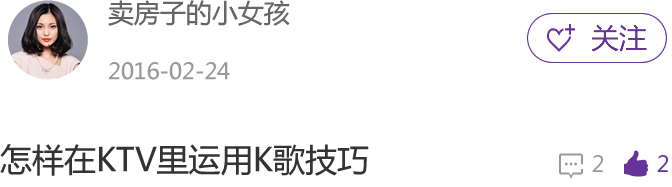

详情

" 要想唱一首歌曲，首先唱歌的人一定要做到声情并茂。一是“声”：用哪些动作去唱歌，什么动作在唱歌时运用会发挥出更好的效果。二是“情”：唱歌时所要表达的一种感情，怎样带动“观众”（被认作是不是投入有没有一种音乐独特的气质。） 本期小编推荐南区地铁口潜力盘，虽然新进入的加上目前现有的，看起来南区目前楼盘众多，但占据地铁口优势的就只有那么几个，卖一套少一套，赶紧来看看吧。正商城是位于二环旁的综合体盘，地理位置优越；临近地铁5号线、BRT快速公交等，交通十分便利；小区周边配套相对成熟，其中教育资源丰富，内部规划有5所幼儿园，三所小学，周边有铁路晨曦幼儿园，心连心幼儿园，春晖小学，邱砦小学，长江路小学，中学有82中、62中。